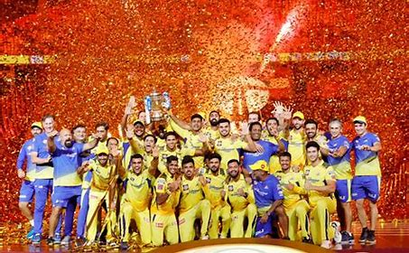

Chennai Super Kings (CSK) is a franchise cricket team based in Chennai, Tamil Nadu, India. They play in the Indian Premier League (IPL). Founded in 2008, CSK has a large fan base and is known for its consistent performance in the league. The team is captained by Mahendra Singh Dhoni and coached by Stephen Fleming.
Achievements
- IPL Champions: 2010, 2011, 2018, 2021
- Champions League T20: 2010, 2014
- Most playoff appearances in IPL history
- Highest win percentage in IPL history
Key Players
- Mahendra Singh Dhoni (Captain and Wicketkeeper)
- Suresh Raina (Batsman)
- Ravindra Jadeja (All-rounder)
- Faf du Plessis (Batsman)
- Dwayne Bravo (All-rounder)
- Deepak Chahar (Bowler)
Team History
CSK was founded in 2008 and has since become one of the most successful teams in IPL history. The team is known for its strong leadership under MS Dhoni and consistent performance. The home ground of CSK is the M. A. Chidambaram Stadium in Chennai, often referred to as "The Chepauk."
CSK was temporarily suspended for two years in 2015 but made a strong comeback in 2018 by winning the IPL championship. The team's resilience and strong fan base have made them a beloved franchise in the IPL.
Team Colors and Mascot
The team colors are yellow and blue, representing energy and success. The mascot of CSK is a lion named "Whistle Podu Express," symbolizing courage and strength.